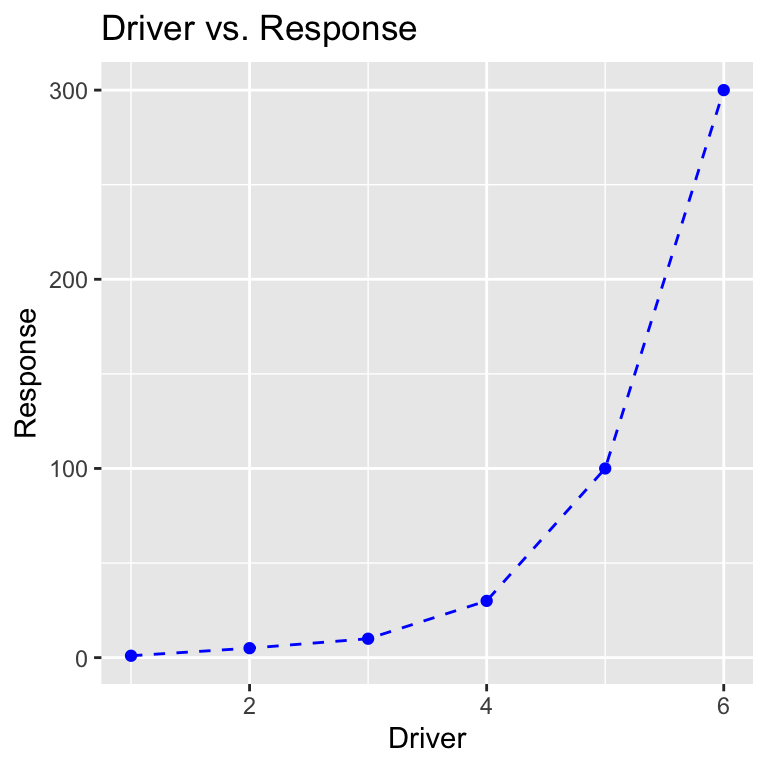

6.4 Working With Popular Packages
6.4.1 What is a package?
Up to this point in this book/course, we have really focused on using base R.
By base, we simply mean the functions, data sets, and arguments that come
pre-packaged with R. While this book has (hopefully) shown you just how much
these basic functions can do, R can do so much more by relying on packages.
Packages are an integral part of R programming, and you have been using them
throughout this book and class. A package is a contained set of arguments,
operations, data, and/or other tools that don’t come with R. In general
these are built by the vast community of R users and they cover tools from making
beautiful maps in R to doing financial time-series analyses to downloading
and analyzing hydrology data (see Vignettes). In fact, you have been using
packages this whole time. For example, In order to knit a document using RMarkdown, you have to have the RMarkdown package installed.
On many (most?) projects, the most efficient way to complete whatever task you
are doing is to spend at least some time checking out if there is a package
that makes it easier for you to do things like:
- Download data from the internet
- Perform statistical analyses
- Plot data
- Make maps
- Add interactivity to your R code (like zoomable maps or plots)
- And so much more!
6.4.2 How do I use packages?
There are always at least two steps to using any package.
- Install the package using
install.packages(). You only have to do this once. - Load the package using
library(). You have to do this every time you want to use the capabilities of that package, but only once per Script or once per RMarkdown document.
Here is an example with an extremely common plotting package ggplot2 you will
work on in the next module (and have probably already seen on the internet)
Now that we’ve installed the package we can load it into R, using library()
Now that we have installed the package we will need to learn how to use it. Where can we go to for help?
6.4.3 Finding and using package help.
All R packages installed with install.packages will come from the
Comprehensive R Archive Network (“CRAN”). In order for you to work with them
they have to have gone through a minimum overview, which ensures that they
will at least have a minimum help page. So for any package you want to
read more about you can simply search for: CRAN <package name>. For ggplot2
this will lead you to this website. This site
outlines many of the resources for using ggplot2, but they can be hard to find.
The two most important places to look for help are the Reference manual and the
URL.
The reference manual will outline every function that the package can perform and how to use the functions.
ggplot2 is a big package so it has tons of functions, which is why you might not
want to only use the PDF, which can be hard to navigate. Luckily they made a website
that is more clear and has far more examples here.
6.4.4 Making Beautiful Plots with ggplot2
Our package is now loaded, we have a manual for reference so let’s use it!
# Making up data for plotting
dat <- data.frame( response = c(1,5,10,30,100,300),
driver = c(1,2,3,4,5,6))
# Make a scatter plot with x and y
ggplot(dat, aes(x = driver, y = response)) +
geom_point()
In the above command ggplot2 uses the data frame dat and the aesthetics (aes)
argument to map which columns go where. In this case we want the driver variable
to be on the x-axis and the response variable to be on the y-axis. Finally
we want to use points to display this relationship between x and y (geom_point).
Note: ggplot2 connects a series of arguments using
+ operator. This is unique to ggplot, but it’s
a helpful way to make complex plots by combining simpler pieces. This
can be difficult to get used to, but can be very powerful when you get
the hang of it.
Let’s add some lines to connect the points using the geom_line() command.
ggplot(dat, aes(x = driver, y = response)) +
geom_point() +
geom_line() # add lines to connect the points
The geom prefix on the geom_point and
geom_line functions stands for geometry.
ggplot2 comes with many different types of geometries (see
here ), and some
folks have created their own packages to add even more
options!
We can also change the way the lines and points look with arguments in the geom_point and geom_line functions:
ggplot(dat, aes(x = driver, y = response)) +
geom_point(color="blue") + # make the points blue
geom_line(linetype="dashed", color="blue") # make the lines dashed and blue
We can add a title and axis labels using the labs function:
ggplot(dat, aes(x = driver, y = response)) +
geom_point(color="blue") +
geom_line(linetype="dashed", color="blue") +
labs(title="Driver vs. Response", x="Driver", y="Response") # add labels to the plotFinally, we can use one of the included ggplot2 themes to change how the plot looks, using the theme_set function:
theme_set(theme_minimal()) # change the theme
ggplot(dat, aes(x = driver, y = response)) +
geom_point(color="blue") +
geom_line(linetype="dashed", color="blue") +
labs(title="Driver vs. Response", x="Driver", y="Response")Here’s another example using the mtcars data frame, where we color the points based on their fuel economy (mpg) and annotate a few cars.
mtcars$car <- row.names(mtcars) # turn row names into a column so we can label with them
ggplot(mtcars, aes(x=hp, y=disp, color=mpg, label=car)) +
geom_point() +
geom_text(color="black", hjust=0, nudge_x=5, alpha=0.8, size=2) + # annotate each car
scale_color_viridis_c(option="D") + # change color scale to use
labs(title="Motor Trend Car Comparison", x="Horsepower", y="Displacement", color="MPG")
This is only scratching the surface of what ggplot2 can do, but hopefully this introduction is enough to hint at the possibilities.
You can find many more examples at The R Graph Gallery.
(No need to turn this in) Create a plot of wt
vs. mpg using the mtcars data frame using
ggplot2. Make the points green.
6.4.5 Organizing Your Data With dplyr
As we saw, ggplot2 is a package intended to make nice looking visualizations in R easy.
This is interesting, because R already has the capability to make plots, it’s just that ggplot2 is another way of making plots which many people think is more powerful.
The same can be said about the next package we’ll discuss, dplyr (rhymes with “deep liar”), which is another way of manipulating data in R.
We’ve spent a considerable amount of time on indexing, and you may have found the process somewhat confusing.
Well, dplyr is another way of indexing data frames that many people find to be more intuitive.
As always, you have to install dplyr if you haven’t already.
Then whenever you’d like to use the package, you have to load it:
Let’s look at some exmples of base R indexing and compare that to how dplyr accomplishes the same task.
In base R, to select columns matching a certain condition, you create a logical vector and use it to index rows of the data frame
index <- (mtcars$cyl == 4) & (mtcars$wt < 2) # select only columns with 4 cylinders and a weight under 2 tons
mtcars[index,]In dplyr, the same thing can be accomplished with the filter function:
This might already seem like an improvement, because it requires less code, but most people use the filter function differently than this.
dplyr uses a pipe (which looks like this %>%) to structure arguments differently.
Here’s how the same function looks with the pipe:
Basically, the pipe operator says “Take the think on the left and use it as the first argument for the function on the right”. This may seem backwards at first, but it allows the chaining of multiple functions together in an order that reflects the order of computation that R will use (more on this after the next example). Recall that here’s how we select a column in base R:
[1] 16.46 17.02 18.61 19.44 17.02 20.22 15.84 20.00 22.90 18.30 18.90 17.40
[13] 17.60 18.00 17.98 17.82 17.42 19.47 18.52 19.90 20.01 16.87 17.30 15.41
[25] 17.05 18.90 16.70 16.90 14.50 15.50 14.60 18.60And here’s how to do the same thing in dplyr:
Notice that dplyr has maintained the data frame structure, while indexing has not.
We can get the same thing from indexing if we use the drop=F argument:
The pipe works with the select function because the first argument of select is the data frame to select from, so the pipe says “Use mtcars as the first argument of the select function”.
Here’s how we would do the filtering and selection at the same time in dplyr:
Since the result of the filter function is a data frame (which is why it printed in the result in the example above!), that data frame can be piped into the select function.
This easy chaining of arguments is one reason why people love to work with tidyverse packages.
The pipe operator is one of the most common elements of the tidyverse group of packages. One of the tidyverse packages called magrittr even uses the pipe operator as its official logo, with the slogan “Ceci n’est pas un pipe”, a reference to this famous work of art.
dplyr can also summarize columns in different groups similarly to the tapply function.
Here’s an example of tapply:
4 6 8
26.66364 19.74286 15.10000 In dplyr this is accomplished with the group_by and summarize functions:
With only a few functions, we can now start to chain together quite complex operations in a human readable way:
mtcars %>%
filter(wt > 2) %>% # filter out cars below 2 tons
group_by(cyl, gear) %>% # group by number of cylinders and number of gears
summarize(n = n(), # compute number of cars in each group
ave_mpg = mean(mpg), # compute average mpg
sd_mpg = sd(mpg)) # compute standard deviation of mpg`summarise()` has grouped output by 'cyl'. You can override using the
`.groups` argument.Again, this is only a teaser of the capabilities of dplyr, but the hope is that if/when you encounter dplyr in the future, you will at least have an introduction to some of the basic concepts.
6.4.6 Working With Character Strings with stringr
stringr is another tidyverse package that provides functions for easily working with character strings.
To show some of the capabilities of the stringr package, we’ll read in “Pride and Prejudice” which is available on Project Gutenberg here.
lines <- readLines(file("data_raw/pride_and_prejudice.txt", "rt"))
length(lines) # the book is now a long character vector[1] 14594The first thing we’ll do is convert the text into “UTF-8” formatting using stringr’s str_conv function:
Right now, each element of lines is just a single line from the original text file.
Let’s collapse all the elements into a single character string:
[1] 775739Now we can split the book in a more sensible way.
Let’s split the string at the end of each sentence using the strsplit function (this is a base R function, actually).
sent <- strsplit(book, "(?<=[[:punct:]])\\s(?=[A-Z])", perl=T) # split by end of sentences
sent <- unlist(sent) # convert list to character vector
length(sent)[1] 5175
The strsplit function above used something called a
regular expression to identify patterns that indicate the end
of a sentence. Regular expressions are commonly used in programming, and
can be confusing when first encountered. This is okay! You might want to
take a look at this
resource if you want more info on regular expressions in R.
The sent vector now contains sentences as elements.
Let’s look at an arbitrary sentence:
[1] "I should think she had as good a chance of happiness as if she were to be studying his character for a twelvemonth."We notice that there are some extra spaces in the sentence, which probably result from the formatting of the original text file. Ignoring that for now, we can find all sentences containing the word “Jane”:
[1] 265We see there are 265 sentences with the string “Jane” in them. Let’s look at some of them:
[1] "She could think of nothing else; and yet whether Bingley’s regard had really died away, or were suppressed by his friends’ interference; whether he had been aware of Jane’s attachment, or whether it had escaped his observation; whatever were the case, though her opinion of him must be materially affected by the difference, her sister’s situation remained the same, her peace equally wounded. A day or two passed before Jane had courage to speak of her feelings to Elizabeth; but at last, on Mrs."
[2] "It cannot last long. He will be forgot, and we shall all be as we were before.” Elizabeth looked at her sister with incredulous solicitude, but said nothing. “You doubt me,” cried Jane, slightly colouring; “indeed, you have no reason."
[3] "A little time, therefore—I shall certainly try to get the better.” With a stronger voice she soon added, “I have this comfort immediately, that it has not been more than an error of fancy on my side, and that it has done no harm to anyone but myself.” “My dear Jane!” exclaimed Elizabeth, “you are too good."
[4] "My dear Jane,"
[5] "You shall not, for the sake of one individual, change the meaning of principle and integrity, nor endeavour to persuade yourself or me, that selfishness is prudence, and insensibility of danger security for happiness.” “I must think your language too strong in speaking of both,” replied Jane; “and I hope you will be convinced of it by seeing them happy together."
[6] "They may wish many things besides his happiness; they may wish his increase of wealth and consequence; they may wish him to marry a girl who has all the importance of money, great connections, and pride.” “Beyond a doubt, they do wish him to choose Miss Darcy,” replied Jane; “but this may be from better feelings than you are supposing." We can also count the number of occurrences of a string in the book using the str_count function:
[1] 46[1] 8To see more capability of the stringr package, you can check out this cheat sheet.
Any feedback for this section? Click here